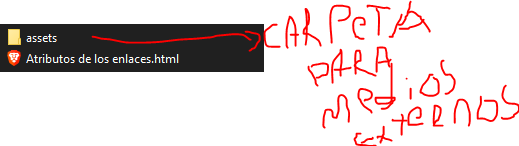
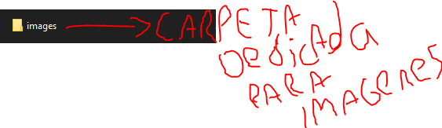

Atributo Target
Este atributo servira para definir en donde se abre el
recurso solicitado, puede ser en la misma pagina, en una
nueva pagina, etc..
Ademas por norma si el enlace utiliza una ruta
absoluta el atributo target debera ser de valor
_blank para que se abra en una nueva pestaña del
navegador.
Atributo Download
Este es un atributo booleano, el cual servira para
descargar el recurso solicitado.
Importante el recurso debe estar en el mismo
servidor, no podremos descargar un archivo html
externo.
Estructura de desarrollo para imagenes y archivos
externos: Carpeta assets
Dentro de nuestra carpeta principal del proyecto crearemos una carpeta llamada assets en el cual iran todos los archivos externos, por ejemplo imagenes videos, etc..

Carpeta propia para el tipo de archivo
En la carpeta de medios externos de nuestro proyecto en este caso "assets", crearemos una nueva carpeta para cada tipo de archivo por ejemplo images para imagenes.
